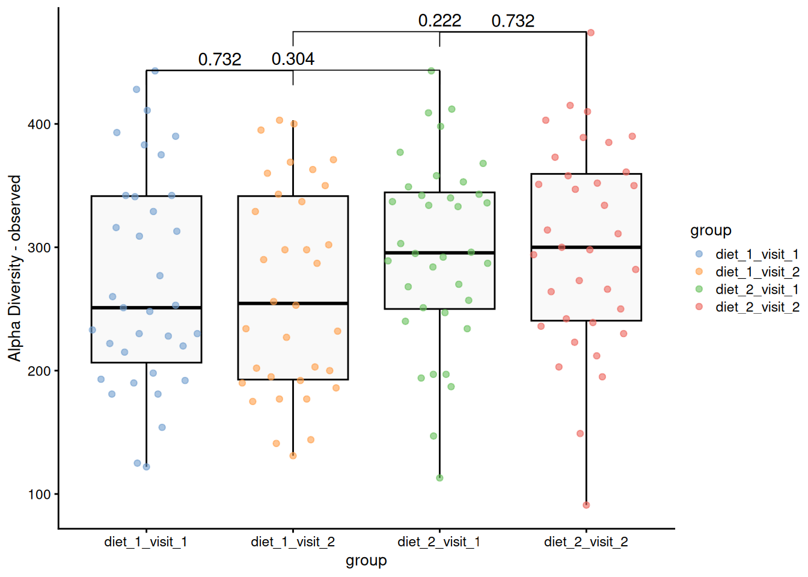
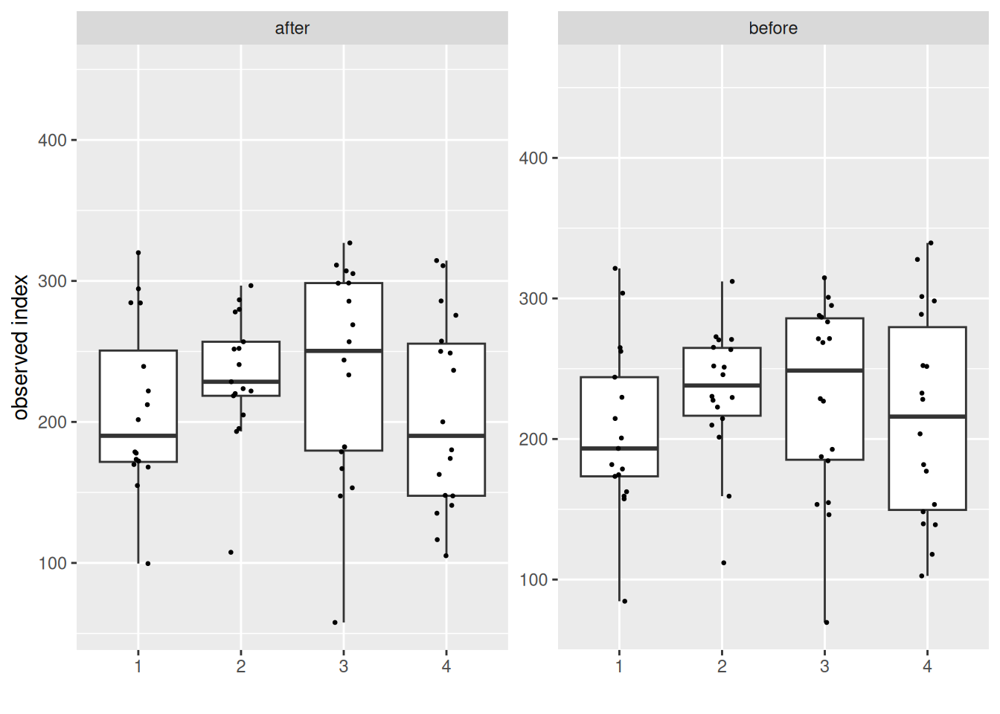
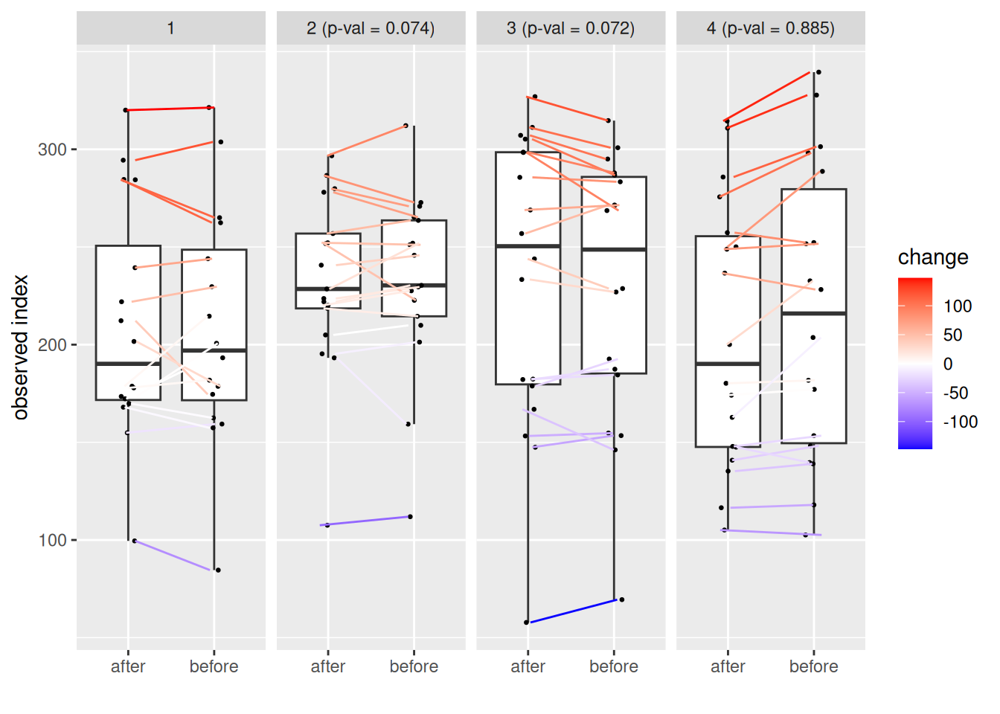

Alpha Diversity
Introduction
This document reports on a microbiota project results of alpha diversity across different diets and visits.
Group-wise comparisons
- Index: observed
- Group variable: group
- Multiple testing correction: fdr
Visualization
Table of the top findings
Alternate analyses
| Characteristic |
after
|
before
|
||||
|---|---|---|---|---|---|---|
| Beta | 95% CI1 | p-value | Beta | 95% CI1 | p-value | |
| (Intercept) | 144 | 59, 229 | 0.001 | 152 | 67, 236 | <0.001 |
| meal_group | 0.3 | 0.4 | ||||
| 1 | — | — | — | — | ||
| 2 | 28 | -16, 72 | 0.2 | 32 | -11, 75 | 0.14 |
| 3 | 30 | -14, 73 | 0.2 | 27 | -15, 70 | 0.2 |
| 4 | -3.8 | -47, 39 | 0.9 | 10 | -32, 53 | 0.6 |
| age | 1.2 | -0.25, 2.7 | 0.10 | 1.0 | -0.45, 2.5 | 0.2 |
| 1 CI = Confidence Interval | ||||||
| Paired test of before and after | Beta | 95% CI1 | p-value |
|---|---|---|---|
| (Intercept) | 147 | 89, 206 | <0.001 |
| meal_group | 0.11 | ||
| 1 | — | — | |
| 2 | 28 | -2.7, 58 | 0.074 |
| 3 | 28 | -2.5, 58 | 0.072 |
| 4 | 2.2 | -28, 32 | 0.9 |
| age | 1.2 | 0.13, 2.2 | 0.026 |
| 1 CI = Confidence Interval | |||


Data Summary
class: TreeSummarizedExperiment
dim: 1700 140
metadata(0):
assays(2): counts relabundance
rownames(1700): SGB4933 SGB4285 ... SGB15018 SGB4921
rowData names(9): kingdom phylum ... strain clade_name
colnames(140): AE1332 AK1371 ... TS2358 VK2336
colData names(13): sample id ... shannon group
reducedDimNames(0):
mainExpName: NULL
altExpNames(10): PrevalentGenus PrevalentSpecies ... species strain
rowLinks: NULL
rowTree: NULL
colLinks: NULL
colTree: NULLVersion info
R version 4.4.2 (2024-10-31)
Platform: x86_64-pc-linux-gnu
Running under: Ubuntu 24.04.1 LTS
Matrix products: default
BLAS: /usr/lib/x86_64-linux-gnu/blas/libblas.so.3.12.0
LAPACK: /usr/lib/x86_64-linux-gnu/lapack/liblapack.so.3.12.0
locale:
[1] LC_CTYPE=en_US.UTF-8 LC_NUMERIC=C
[3] LC_TIME=en_US.UTF-8 LC_COLLATE=en_US.UTF-8
[5] LC_MONETARY=en_US.UTF-8 LC_MESSAGES=en_US.UTF-8
[7] LC_PAPER=en_US.UTF-8 LC_NAME=C
[9] LC_ADDRESS=C LC_TELEPHONE=C
[11] LC_MEASUREMENT=en_US.UTF-8 LC_IDENTIFICATION=C
time zone: Europe/Helsinki
tzcode source: system (glibc)
attached base packages:
[1] stats4 grid stats graphics grDevices utils datasets
[8] methods base
other attached packages:
[1] vegan_2.6-8 lattice_0.22-6
[3] permute_0.9-7 lubridate_1.9.3
[5] forcats_1.0.0 stringr_1.5.1
[7] purrr_1.0.2 readr_2.1.5
[9] tibble_3.2.1 tidyverse_2.0.0
[11] tidyr_1.3.1 sechm_1.13.1
[13] ComplexHeatmap_2.21.1 scater_1.33.4
[15] scuttle_1.15.4 quarto_1.4.4
[17] patchwork_1.3.0 parameters_0.24.0
[19] multtest_2.61.0 miaTime_0.1.21
[21] miaViz_1.15.4 ggraph_2.2.1
[23] mia_1.15.6 TreeSummarizedExperiment_2.13.0
[25] Biostrings_2.73.2 XVector_0.45.0
[27] SingleCellExperiment_1.27.2 MultiAssayExperiment_1.31.5
[29] SummarizedExperiment_1.35.3 Biobase_2.65.1
[31] GenomicRanges_1.57.1 GenomeInfoDb_1.41.2
[33] IRanges_2.39.2 S4Vectors_0.43.2
[35] BiocGenerics_0.51.3 MatrixGenerics_1.17.0
[37] matrixStats_1.4.1 gridExtra_2.3
[39] gtsummary_2.0.4 ggsignif_0.6.4
[41] ggpubr_0.6.0 ggplot2_3.5.1
[43] DT_0.33 dplyr_1.1.4
[45] cardx_0.2.2 ANCOMBC_2.8.0
loaded via a namespace (and not attached):
[1] randomcoloR_1.1.0.1 gld_2.6.6
[3] nnet_7.3-19 TH.data_1.1-2
[5] vctrs_0.6.5 energy_1.7-12
[7] digest_0.6.37 png_0.1-8
[9] shape_1.4.6.1 proxy_0.4-27
[11] Exact_3.3 registry_0.5-1
[13] rbiom_1.0.3 ggrepel_0.9.6
[15] bayestestR_0.15.0 parallelly_1.38.0
[17] mediation_4.5.0 MASS_7.3-61
[19] reshape2_1.4.4 foreach_1.5.2
[21] withr_3.0.2 xfun_0.49
[23] ggfun_0.1.6 survival_3.7-0
[25] doRNG_1.8.6 commonmark_1.9.1
[27] memoise_2.0.1 ggbeeswarm_0.7.2
[29] emmeans_1.10.4 gmp_0.7-5
[31] tidytree_0.4.6 zoo_1.8-12
[33] GlobalOptions_0.1.2 gtools_3.9.5
[35] V8_5.0.1 Formula_1.2-5
[37] datawizard_0.13.0 httr_1.4.7
[39] rstatix_0.7.2 globals_0.16.3
[41] ps_1.8.0 rstudioapi_0.17.1
[43] UCSC.utils_1.1.0 generics_0.1.3
[45] base64enc_0.1-3 processx_3.8.4
[47] curl_5.2.3 zlibbioc_1.51.1
[49] ScaledMatrix_1.13.0 polyclip_1.10-7
[51] ca_0.71.1 GenomeInfoDbData_1.2.13
[53] SparseArray_1.5.41 xtable_1.8-4
[55] doParallel_1.0.17 evaluate_1.0.1
[57] S4Arrays_1.5.10 hms_1.1.3
[59] irlba_2.3.5.1 labelled_2.13.0
[61] colorspace_2.1-1 readxl_1.4.3
[63] magrittr_2.0.3 later_1.3.2
[65] viridis_0.6.5 ggtree_3.13.1
[67] DECIPHER_3.1.4 cowplot_1.1.3
[69] class_7.3-22 Hmisc_5.2-0
[71] pillar_1.9.0 nlme_3.1-165
[73] iterators_1.0.14 decontam_1.25.0
[75] compiler_4.4.2 beachmat_2.21.6
[77] stringi_1.8.4 DescTools_0.99.57
[79] TSP_1.2-4 tokenizers_0.3.0
[81] minqa_1.2.8 plyr_1.8.9
[83] crayon_1.5.3 abind_1.4-8
[85] gridGraphics_0.5-1 haven_2.5.4
[87] graphlayouts_1.2.0 bit_4.5.0
[89] rootSolve_1.8.2.4 sandwich_3.1-1
[91] codetools_0.2-20 multcomp_1.4-26
[93] BiocSingular_1.21.4 crosstalk_1.2.1
[95] bslib_0.8.0 slam_0.1-54
[97] e1071_1.7-16 lmom_3.2
[99] GetoptLong_1.0.5 tidytext_0.4.2
[101] splines_4.4.2 markdown_1.13
[103] circlize_0.4.16 Rcpp_1.0.13-1
[105] sparseMatrixStats_1.17.2 cellranger_1.1.0
[107] knitr_1.48 utf8_1.2.4
[109] clue_0.3-65 lme4_1.1-35.5
[111] fs_1.6.5 listenv_0.9.1
[113] checkmate_2.3.2 DelayedMatrixStats_1.27.3
[115] Rdpack_2.6.1 expm_1.0-0
[117] gsl_2.1-8 ggplotify_0.1.2
[119] estimability_1.5.1 Matrix_1.7-0
[121] tzdb_0.4.0 lpSolve_5.6.21
[123] tweenr_2.0.3 pkgconfig_2.0.3
[125] tools_4.4.2 cachem_1.1.0
[127] rbibutils_2.2.16 viridisLite_0.4.2
[129] DBI_1.2.3 numDeriv_2016.8-1.1
[131] gt_0.11.1 fastmap_1.2.0
[133] rmarkdown_2.29 scales_1.3.0
[135] cards_0.4.0 sass_0.4.9
[137] broom_1.0.7 coda_0.19-4.1
[139] insight_1.0.0 carData_3.0-5
[141] rpart_4.1.23 farver_2.1.2
[143] tidygraph_1.3.1 mgcv_1.9-1
[145] yaml_2.3.10 foreign_0.8-86
[147] cli_3.6.3 lifecycle_1.0.4
[149] mvtnorm_1.3-2 bluster_1.15.1
[151] backports_1.5.0 BiocParallel_1.39.0
[153] timechange_0.3.0 gtable_0.3.6
[155] rjson_0.2.23 parallel_4.4.2
[157] ape_5.8 SnowballC_0.7.1
[159] CVXR_1.0-15 jsonlite_1.8.9
[161] seriation_1.5.6 bit64_4.5.2
[163] Rtsne_0.17 yulab.utils_0.1.8
[165] BiocNeighbors_1.99.1 RcppParallel_5.1.9
[167] janeaustenr_1.0.0 jquerylib_0.1.4
[169] lazyeval_0.2.2 htmltools_0.5.8.1
[171] glue_1.8.0 broom.helpers_1.17.0
[173] treeio_1.29.1 boot_1.3-30
[175] igraph_2.1.1 R6_2.5.1
[177] broom.mixed_0.2.9.6 labeling_0.4.3
[179] Rmpfr_1.0-0 cluster_2.1.6
[181] rngtools_1.5.2 aplot_0.2.3
[183] nloptr_2.1.1 DirichletMultinomial_1.47.0
[185] DelayedArray_0.31.13 tidyselect_1.2.1
[187] vipor_0.4.7 htmlTable_2.4.3
[189] xml2_1.3.6 ggforce_0.4.2
[191] car_3.1-3 future_1.34.0
[193] rsvd_1.0.5 munsell_0.5.1
[195] furrr_0.3.1 data.table_1.16.2
[197] htmlwidgets_1.6.4 RColorBrewer_1.1-3
[199] rlang_1.1.4 lmerTest_3.1-3
[201] ggnewscale_0.5.0 fansi_1.0.6
[203] beeswarm_0.4.0